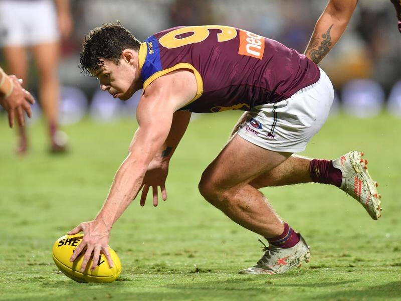
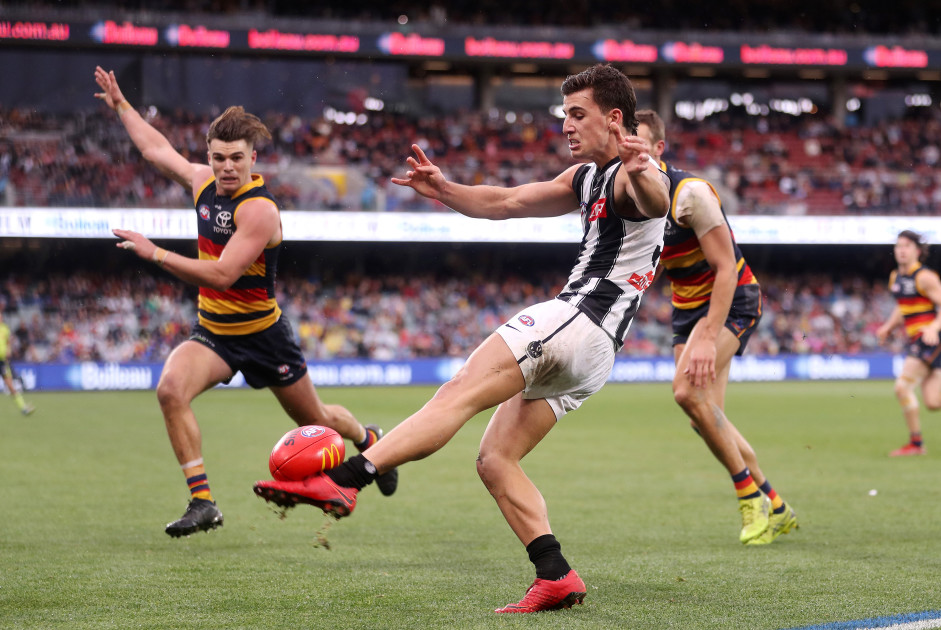
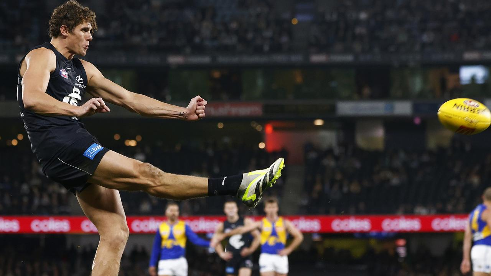
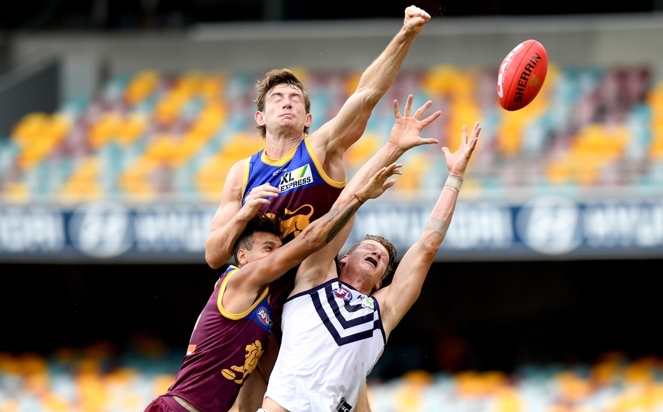

Explaining the SuperCoach AFL scoring system
Jaiden
Last updated on 2024-01-27
SuperCoach AFL is a very popular fantasy sports game in Australia. Footy fans become the ‘coach’ of a fantasy team, where each player is scored each match based on their game performance. It has just opened to the public for 2024 and avid punters can now put together their starting squad.
The main premise of SuperCoach, and its scoring system in particular, is that every action in a game of Australian Football has an impact on the result of the match. Some actions are more important than others. Players can determine a game in a shot for goal, or save their lead in a massive pack-mark on the goal line. In essence, each statistic is scored based on how much it improves the chances of winning.
However, this scoring system is kept secret - we essentially have to believe what each player scores is legitimate. There is no definitive list of which stats are included, or how collated stats get broken down, leaving the community to guess what is going on.
Where do we start?
I’ve spent the offseason researching the game of SuperCoach and which stats might be included in the scoring system. This includes X (Twitter), online AFL forums, the Champion Data glossary, but as a student I didn’t wanna pay up for a Herald Sun subscription. It probably would’ve been wise in hindsight.
At the heart of the ranking points system is that it considers players winning the ball, disposing of it, and where on the ground they do it. It seems that we only need to focus on the things a player does with the ball, plus a few of the simpler defensive actions. Straight away, I can remove positional data like centre bounce attendances and time on ground percentage, and also aggregated stats like total disposals & total clearances when we have better breakdowns already available.
Last year, I attempted this same feat by applying “known” values to each match. For example, we’ve heard that goals are worth 8 points. While this is more useful than nothing, SuperCoach has deeper intricacies in its scoring system. Unlike other fantasy games, ranking points are weighted and adjusted by the time-elapsed in a match and the current margin. This means that scoring in close games looks a lot different to scoring in a blowout.
Finally, every regular-season game has 4 premiership points for the winner, so the last step for SuperCoach is similar, ensuring there are 3300 total points allocated in each match.
After review of last year’s analysis, which had good (but unusable) results, I decided that I need to get fancier. I needed more match statistics than ever before, and it seemed there was enough variety across AFL stats sources - the AFL website, the AFL app, Champion Data, and other match centres.
With my research in mind, I came up with a plan of action: 1. Collect, calculate and collate as many statistics as possible 2. Determine the zone in which each stat occurred (D50, MID, F50) for more precision 3. Create a model to weight all the stats with respect to each player’s final score 4. Remove statistics that are insignificant or are better described in more detail 5. Add scaling to the 3300 figure for each match 6. Summarise the results and present the average value each stat is worth
Sourcing the advanced stats
You might be familiar with the possibilities of Stats Pro in the AFL app. On mobile, you can watch player highlights in short clips of their involvements for the match.
The best thing about this feature is that every stat is time-stamped. I first started by downloading every player’s set of actions from each match, and then combined them all in chronological order. This means we can view each game from an individual stat perspective, and we can get an idea of how the ball moves. Take this famous example from last season - see if you can recognise it.
This has changed how I work with statistics for the fantasy platforms, as I am now assessing player performance via when they win the ball, the state in which they get involved (stoppages, turnover, etc) and where on the ground they are. The last point is the key - we know that SuperCoach points are likely to be boosted when in defensive-50 or forward-50.
The model
I’ve been collecting data from these sources, but unfortunately a lot of it has been manual interpretation. This includes calculating kick distances, kick direction, kick effectiveness, how the kick was received, who generated score assists, whether each mark was from a teammate or opponent, the result of spoils, kick-in playing on vs taking it from the square, the result of hitouts… it is a complicated task. Oh, and grouping every stat by D50, MID or F50 zones!
Assuming each recorded statistic is worth the same amount each game, we should be able to calculate an ‘average’ points value for each stat across all game scenarios - close or a blowout. As every game is worth the same approximate 3300 points, the scaling should be similar across all games too. What this means is that we can estimate what our players typically get rewarded for a specific act on the footy field.
In AFL Fantasy/DreamTeam, stats are weighted equally. Every kick is worth 3 points, no matter when or where it happened. The goal of this SuperCoach analysis is to give you an idea of what each stat is worth, similar to how we associate +3 points with every kick in AF/DT.
To find an average value for each statistic, I’ve decided to go with a simple linear model where we try to minimise deviation from the real score. My results yielded a R-squared value of 0.968, meaning that 96.8% of variation in SuperCoach scoring is explained by this model. I think that’s pretty good considering we aren’t scaling stats based on the margin or how much of the game has elapsed! The mean absolute error (MAE) for each SuperCoach score was 4.23, meaning that on average, this model was only 4.23 points off the real SuperCoach score for each player.
This is a significant improvement from the last time I tried to figure out SuperCoach scoring, which had results of 90.2% R-squared and 7.81 MAE.
Statistics Breakdown
Possession
Loose ball-get - Picking up the ball at ground level without pressure
Hard ball-get - Picking up the ball at ground level under pressure
Loose crumb - Collecting the ball without pressure that comes to ground via marking contest
Hard crumb - Collecting the ball with pressure that comes to ground via marking contest
Gather - Receiving the ball from a teammate
Gather from opposition - Receiving the ball from opposition turnover
Gather from hitout - Receiving the ball from a hitout to advantage
Handball Receive - Receiving the ball from a teammate’s handball
Free For - Receiving a free kick from an opponent’s error

Disposal
Effective Handball - Handballing to your teammate effectively
Effective Kick: Short - A short kick that hits the target
Effective Kick: Long - A 40+ metre kick that reaches a contest
Effective Kick: Long to Advantage - A 40+ metre kick where a teammate receives the ball uncontested
Effective Kick: Backwards - A backwards kick that hits the target. Backward kicks inside 50 are scored as normal kicks
Ineffective kick/handball - Disposals that don’t reach the intended target
Clanger Handball - Handballs that directly result in opposition possession
Clanger Kick - Kicks that directly result in an opposition possession
Clanger Kick: Backwards - A backwards kick that results in opposition possession

Kick-Ins
Kick-In: Play-On - Run the ball out of the square. The kick is scored by disposal values above
Kick-In: Short - Kicking the ball short to a teammate (from the square)
Kick-In: Long - Kicking the ball 40m+ (from the square)
Kick-In: Clanger - Kicking the ball out on the full or to the opposition (from the square)

Marks
Contested Mark - Marking the ball under physical pressure
Uncontested Mark - Marking the ball without physical pressure
Lead Mark - Marking the ball on a lead from a teammate’s kick
Intercept Mark - Marking the ball from an opponent’s kick; can be contested or uncontested

Scoring
Goals - Scoring a goal
Behinds - Scoring a behind
Goal Assists - Getting the ball to a teammate who scores a goal
Behind Assists - Getting the ball to a teammate who scores a behind

Defence
Tackle - Physically preventing an opponent from effectively disposing of the ball
Spoil: Effective - Spoiling the ball away from an opponent, resulting in teammate possession
Spoil: Neutral - Spoiling the ball away from an opponent, and ending the play by causing a stoppage
Spoil: Ineffective - Spoiling the ball away from an opponent, resulting in opposition possession
Spoil: Gain Possession - Spoiling the ball away from an opponent and winning the next possession

Ruck Contests
Hitout to Advantage - Tapping the ball directly to a teammate
Hitout to Opposition - Sharked hitouts are not tagged in any dataset, so I’ve tried to calculate them manually. Pure hitouts aren’t accurate enough; I’ve gone halfway there by looking at who wins first possession. If a ruck wins the hitout but first possession is an opponent, I’ve called it a hitout to opposition. These are around twice as common as ‘sharked hitouts’ as fumbling receives by the initial midfielder aren’t recorded.
Ruck Hard Ball Get - Grabbing the ball out of the ruck instead of tapping it (contested possession)

One Percenters
One percenter totals also include spoils.
Contested knock-on - Tapping the ball (under pressure) to a teammate
Knock-on - Tapping the ball to a teammate
Smother - Preventing an opponent’s disposal by deflecting the motion of the ball
Shepherd - Protecting a teammate in possession by physically getting in the way of an opponent
Block - Protecting a teammate marking the ball by physically preventing an opponent from contesting it. Illegal in the rules, yet still recorded (yes… Willie Rioli was officially rewarded a block stat for preventing Maynard reaching Dom Sheed)
Touched - Touching the ball on the line preventing it from going through as a goal, causing a touched behind
Running bounce - Bouncing the ball while in possession (not a one-percenter but I had to put it somewhere!)
Clangers
Clanger kicks, clanger handballs and clanger kick-ins are also included in clangers.
Free Against - Conceding a free kick to the opposition via an error
50m Penalty - Conceding a more severe or secondary free kick that advances the opposition 50m forward. I couldn’t reverse engineer D50/F50 splits for these
Dropped Mark - Dropping an uncontested mark
Dropped Mark (Gain) - Dropping an uncontested mark but picking it up uncontested. Counted as a clanger if it’s inside F50 which is why it is equivalent to normal dropped marks. The gain itself is scored as a possession
Debit - Ruining a teammate’s chance at an uncontested mark by going for the mark too
No Pressure Error - Dropping the ball and losing possession under no pressure
What’s not included?
Many common stats used in the AFL landscape are not actually included in the all-encompassing SuperCoach formula. Typically these stats are better broken down by stats already mentioned. For example, most clearances have both a possession and a disposal that comprise a clearance. I’m confident that these stats aren’t included based on their lack of statistical significance on the model:
- Clearances (better scored as possession + disposal)
- Inside-50s (disposal + potential score/assist)
- Metres Gained (long kicks bonus)
- Hitouts (0)
- Ineffective Kicks/Handballs (0)
- Score Launches (usually involves an intercept)
- Score Involvements (only the assist player or scorer)
- Pressure Acts
- Turnovers (40m+ long kicks can be effective yet still turn the ball over)
- Marking contest wins/losses (Contested Mark)
- Intercepts (either intercept mark or a gather from opposition)
Conclusion
I hope you have gained some clarity on the facets that are important for scoring in SuperCoach AFL. It’s been a long process and many hours browsing Twitter, BigFooty and using the fancy exploits of Google Search to gain info from paywalled articles. Ultimately, we won’t ever get all the pieces due to intellectual property policies, but I really wanted to understand where players excel.
The benefit of this analysis is that unlike ever before, we can look at how players score their points. Each game’s stats are now calculated for all players and we can answer complex questions with ease. Which player had the most effective handballs inside 50? Which player gains the most points from kicking it long? Who are the best spoilers in the game?
These questions are just the beginning. I look forward to looking into specific stats as preseason 2024 continues. To make sure you don’t miss out you can Follow me on Twitter/X and follow me on Instagram. I’m always open to your questions so tag me in a post, I’d love to answer!
Thanks for reading! Your support ensures I can continue to create content like this. Consider buying me a coffee via Kofi!
Stats By Jaiden